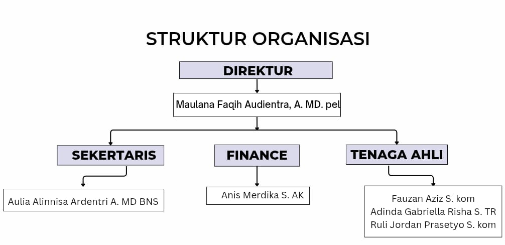

Kegiatan Selama PKL
Membuat Design Untuk IG
Membuat Konten Planning
Pembuatan Website Untuk Perusahaan
Dokumentasi Sosialisasi Silak Di kantor PUPR
Pembuatan Dokumenter JAPATI di PKBM AL JAUHAR
Pembuatan Artikel
Waktu & Tempat Pelaksanaan
Pelaksanaan PKL: 23 mei sampai 31 oktober 2025
Waktu PKL: 08:00 - 17:00
Tempat PKL: Work From Anywhere (WFA)
Profil Perusahaan
PT. CIPTA CITRA TEKNOLOGI merupakan perusahaan one stop IT solution yang bertempat di tangerang, sebagai penyedia layanan pembuatan aplikasi berbasis website, kami memberikan solusi dan kemudahan untuk customer. Seiring perkembangan perusahaan, PT. CIPTA CITRA TEKNOLOGI juga menyediakan berbagai kebutuhan di bidang komputer dan perlengkapan komputer..
Visi
Menjadi perusahaan teknologi terdepan yang memberikan solusi inovatif, efisien, dan bermanfaat bagi masyarakat.
Misi
- Mengembangkan produk dan layanan berbasis teknologi berkualitas tinggi.
- Memberikan pelayanan terbaik kepada klien dan mitra kerja.
- Meningkatkan kompetensi sumber daya manusia secara berkelanjutan.
- Mendorong budaya kerja kreatif, inovatif, dan kolaboratif.
Struktur Organisasi
Sarana & Prasarana
Laptop, Jaringan Internet/Wi-Fi, aplikasi komunikasi, Software pendukung (Adobe illustrator, VS Code, dll.) dan Peralatan pendukung lainnya
Lampiran
Membuat Planning Artikel

Coding Untuk Laporan
Membuat VIdio Ttorial Japati
Pengambilan Vidio Dokumenter JAPATI
Meeting Di Kantor PUPR
Penjemputan Siswa PKL
Hasil & Pengalaman PKL
Selama melaksanakan PKL di PT Cipta Citra Teknologi, saya mendapatkan banyak pengalaman dan pengetahuan baru di bidang yang saya minati. Saya merasa didukung untuk berkembang dan mulai mampu beradaptasi dengan dunia kerja. Selain pengetahuan akademik, saya juga belajar mengenai tanggung jawab dalam menyelesaikan pekerjaan. Dengan pengalaman dan perkembangan yang saya peroleh selama PKL, saya lebih percaya diri untuk melanjutkan karier pada jenjang berikutnya serta mampu menghadapi tantangan di dunia kerja.
Kesimpulan
Praktik Kerja Lapangan (PKL) di PT. Cipta Citra Teknologi memberikan pengalaman berharga bagi kami dalam memahami dunia kerja yang sebenarnya, khususnya di bidang teknologi informasi. Kami memperoleh keterampilan baru, pemahaman tentang alur kerja perusahaan, serta mengasah kemampuan kerja sama tim.
Saran
Harapan kami program PKL ini dapat terus ditingkatkan, baik dalam hal pembimbingan maupun variasi kegiatan. Selain itu, kami juga menyarankan agar fasilitas dan lingkungan kerja terus diperbarui sehingga peserta PKL berikutnya dapat memperoleh pengalaman yang lebih maksimal.
Penutup
Saya berharap PT Cipta Citra Teknologi dapat terus berkembang hingga meraih kesuksesan, serta menjadi andalan bagi para perintis maupun pelaku usaha besar. Semoga ke depannya PT Cipta Citra Teknologi dapat menjalin kerja sama dengan berbagai perusahaan lain, serta tetap membuka kesempatan bagi siswa-siswa PKL untuk belajar dan dibimbing dengan lebih efisien. Saya merasa sangat bersyukur dan puas atas pembelajaran yang saya dapatkan selama PKL di PT Cipta Citra Teknologi. Terima kasih atas bimbingan dan kerja samanya.